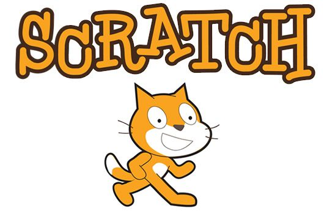

El mundo en que vivimos ha cambiado mucho con el desarrollo de las computadoras. Hoy todos tienen un enorme interés en el trabajo con la computadora porque esto es el futuro del mundo. Las computadoras entraron en todas las áreas de nuestra vida, ya no la podemos imaginar sin el uso de internet, el correo electrónico o las pláticas instantáneas con gente de todo el mundo...
Todo lo anterior se centraliza en un punto muy importante, la Interacción Humano-Computadora.
Piensalo bien, todas las aplicaciones que sueles usar en tu ordenador o dispostivo móvil han sido creadas para que tú puedas interactuar con ellas, por ejemplo, los videojuegos, es posible que te hayas dado cuenta de esto antes, los videojuegos se basan en la interacción humano-computadora ya que tú eres quien se comunica directamente con el ordenador y ocurre una interacción bidireccional.
Lo interesante viene cuando dejas un poco de lado la experiencia de la interacció y comienzas a ser quien la desarrolla .
Existe una gran variedad de programas y sitios web que nos proporcionan un acercamiento a la programación de sistemas interactivos, pero uno que es bastante recomendado es Scratch.
